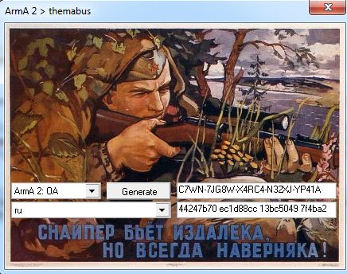

aaa
aaaaaa

Информация по сайту
Как установить DayZ
Для игры в DayZ Epoch mod, понадобится установленная игра Arma 2 OA, вы можете скачать игру вместе с модом Dayz Epoch по данной ссылке
СсылкаСкачать Arma 2 OA 1.63 + DayZ Epoch mod 1.0.5.1
Запускаете файл Arma 2 OA Dayz Epoch.exe и следуете инструкции инсталлера, после установки репака, заходим в папку Keygen для Arma 2 OA, запускаем keygen.exe, выбираем Arma 2 OA, выбираем язык, нажимаем несколько раз кнопку Generate, у вас должно получиться примерно вот так
Не закрывая данного окна, запускаете файл Install Arma 2 OA key, в появившемся окне нажимаете да\ок, потом вводите CD KEY из окна keygen.exe, когда у вас спросят в какую папку устанавливать, указывайте папку с игрой и нажав окей, ПРОВЕРЯЙТЕ что бы адрес был указан верно. Установщик вместо адреса например «D:\Games\Arma 2 OA Dayz Epoch» напишет «D:\Games\Arma 2 OA Dayz Epoch\Bohemia Interactive\ArmA 2 Operation Arrowhead» удаляете вот эту часть «Bohemia Interactive\ArmA 2 Operation Arrowhead» и жмёте далее.